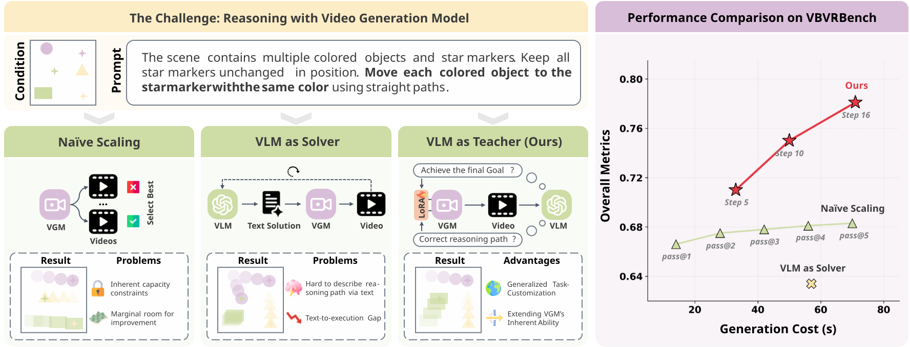
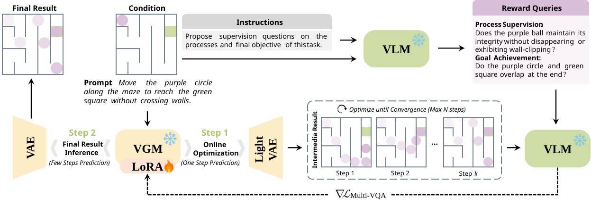

Process & Goal Queries
The VLM Teacher extracts task-specific rules and formulates one final-goal query together with process queries that verify valid intermediate trajectories.
Video Generation Models can produce temporally coherent visual trajectories, yet often fail to follow task-specific rules. We introduce a VLM-as-Teacher framework that synthesizes task-specific reward queries and guides a VGM Reasoner through online test-time optimization of a lightweight LoRA module.

Instead of asking a VLM to write a textual solution, we use it to supervise whether a generated visual reasoning trajectory follows task-specific rules and achieves the intended goal.

The VLM Teacher extracts task-specific rules and formulates one final-goal query together with process queries that verify valid intermediate trajectories.
For each query, the Teacher evaluates whether the current video prediction satisfies the requirement. The likelihood of answering “Yes” provides differentiable supervision.
The VGM backbone remains frozen. At test time, VLM feedback updates only a lightweight LoRA module to improve visual execution for the specific reasoning instance.
The proposed online test-time optimization consistently outperforms sampling-based scaling and prompt-space refinement.
Overall score ↑
Overall score ↑
Qualitative comparison with state-of-the-art methods.
Final-goal supervision ensures successful completion, while process supervision prevents invalid shortcuts and entity-inconsistent trajectories.
@article{cheng2026vlmteacher,
title = {VLMs are Good Teachers for Video Reasoning via Adaptive Test-Time Optimization},
author = {Cheng, Junhao and Hou, Liang and Zhong, Tianxiong and Tao, Xin and Wan, Pengfei and Liao, Jing},
journal = {arXiv preprint},
year = {2026},
url = {https://arxiv.org/abs/2606.02564},
}